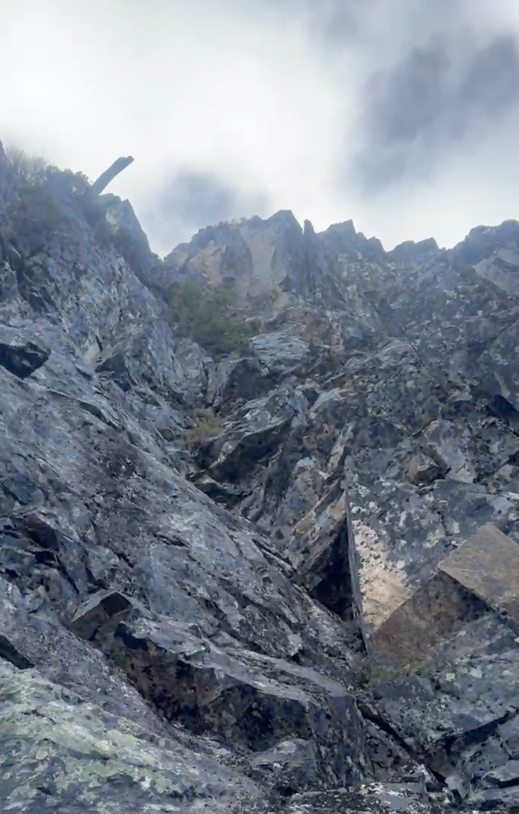
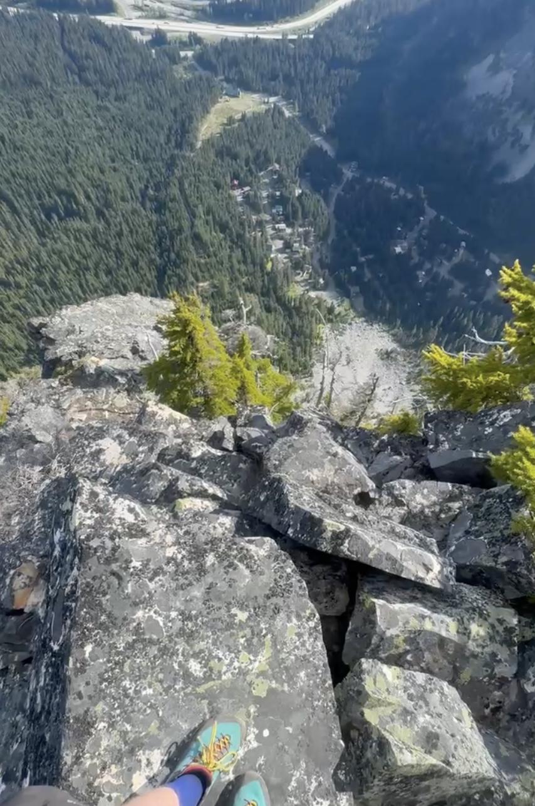

Guye Peak South Gully
05/28/2026
The south gulley route on Guye Peak in Snoqualmie Pass is a mellow day that has equal parts engaging scrambling and thrutchy bushwacking. The route .gpx is also on the Mountain Project map, so route finding is relatively straightforward.
I started at the PCT parking lot on the alpental side of i-90, and got on the social trail out to Guye / Cave Ridge. There’s a relaxed creek crossing, you can take off your shoes or follow a relatively well defined trail up to cross a log.
Bushwacking from the creek crossing to the start of south gulley was a little annoying, but I stuck to the path of least resistance and it went smoothly. The start of the gulley is quite obvious, a huge rock rib sticks out of the ground, and you enter the route to the left of it. From here, bushwack up a little and begin climbing the gulley.
Alternating between 3rd/4th class rock and veggie belays, sticking as left as possible makes for more engaging travel. As you get higher the climbing gets more fun.

Top out onto a ridge, which includes a few towers that are interesting to climb up and over. Don’t be intimidated by the final tower’s steep overhanging roof, it’s breached easily by traversing rightwards across the low fifth slab below and making a few 5.6 jug moves upwards.

Take in some great views of the surrounding peaks, and take the trail back to the cave ridge trail intersection. A left turn here takes you to the snow lakes trailhead via steep, somewhat loose dirt single track, and a right turn takes you back to the PCT parking lot.